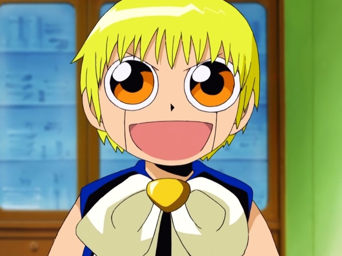

우리가 노래하듯이
우리가 말하듯이
우리가 헤엄치듯이 살길
LIVE LIKE THE WAY WE SING

한바탕 휩쓸고 간 폭풍의 잔해 속에
언제 그랬냐는 듯 잔잔한 파도
비치는 내 얼굴 울렁이는 내 얼굴
너는 바다가 되고 난 배가 되었네
고독함이 머무는 파란도화지 속에
죽음이 어색할 만큼 찬란한 빛깔들
날아가는 생명들 헤엄치는 생명들
너는 물감이 되고 난 붓이 되었네
너는 꼭 살아서
지푸라기라도 잡아서
내 이름을 기억해줘
음악을 잘했던 외로움을 좋아했던
바다의 한마디
우리가 노래하듯이
우리가 말하듯이
우리가 헤엄치듯이 살길
LIVE LIKE THE WAY WE SING